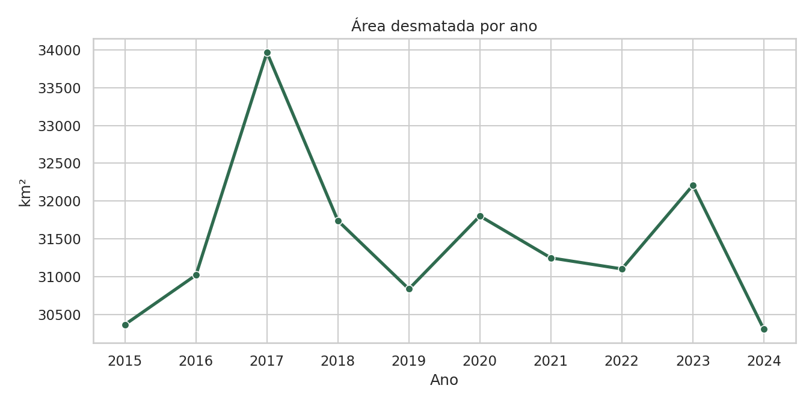
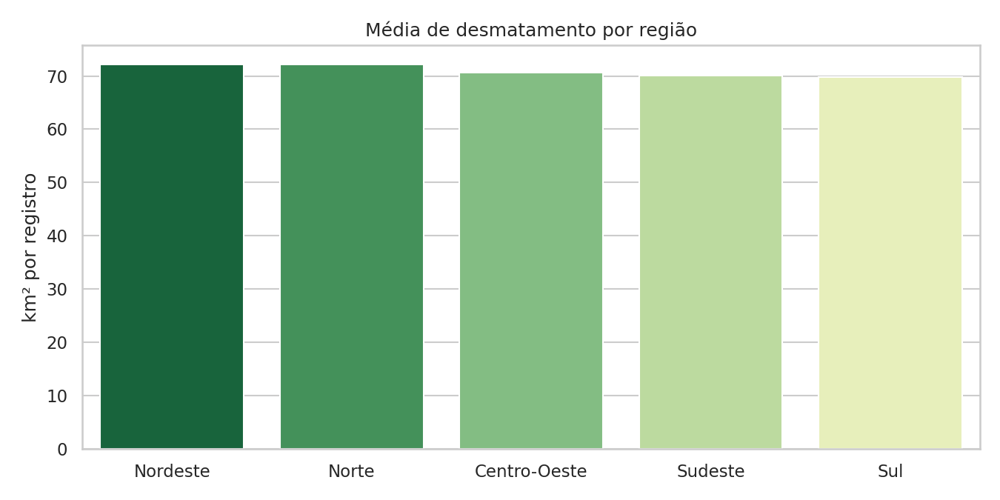
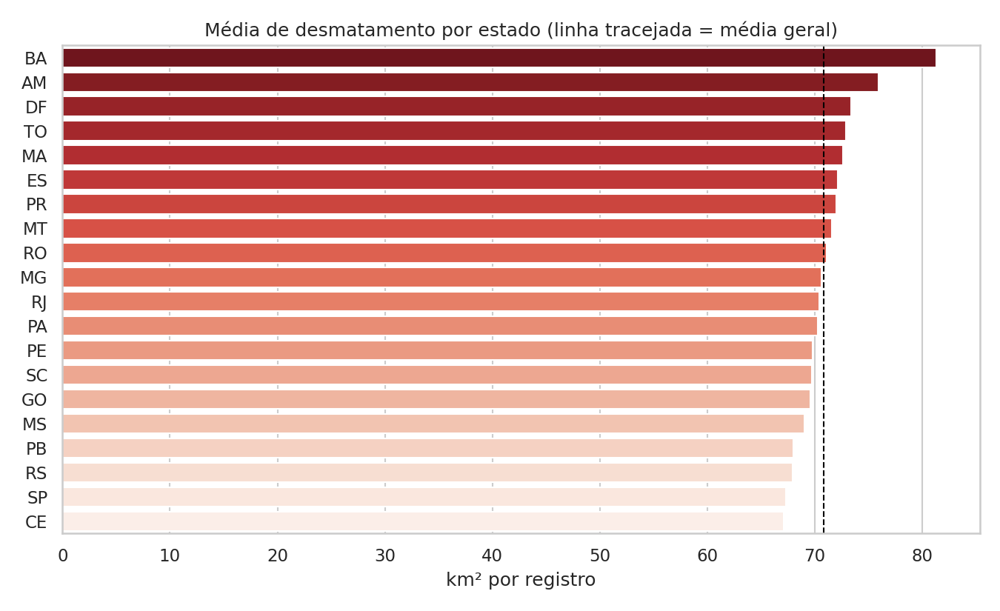
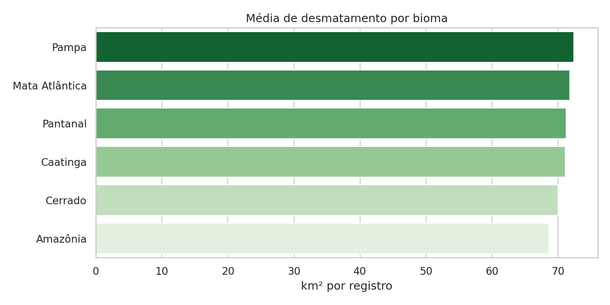
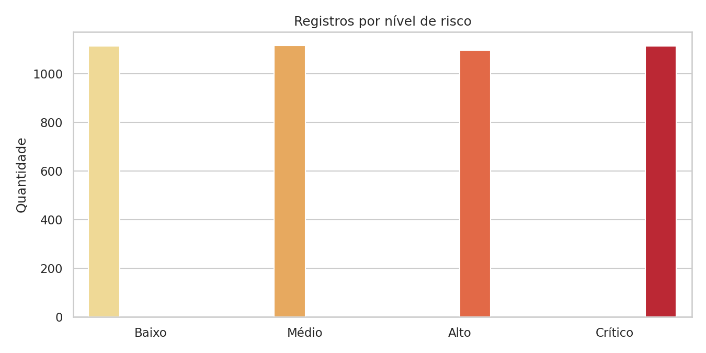
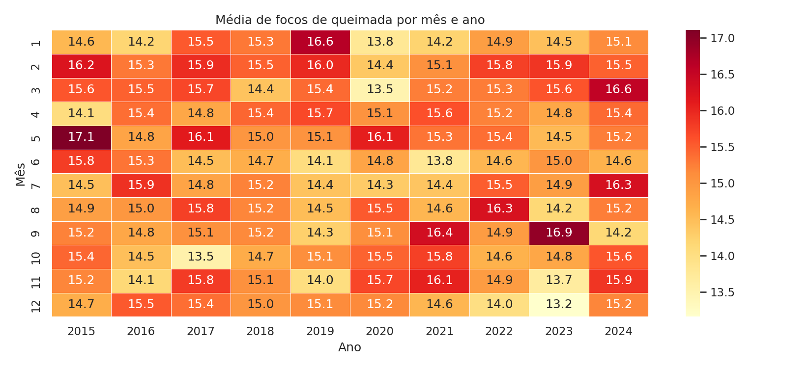
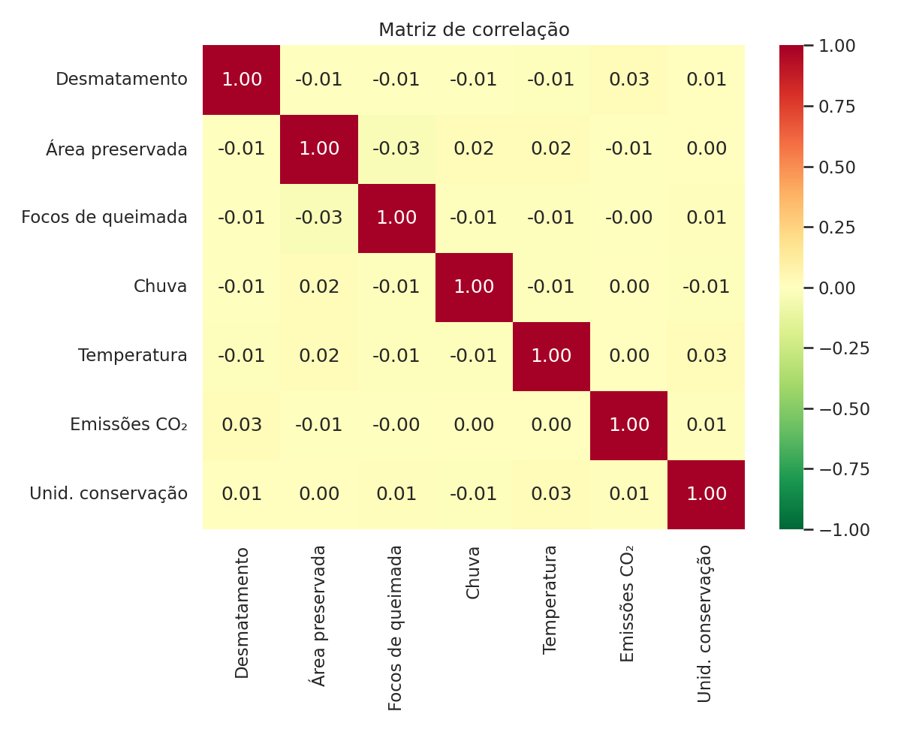
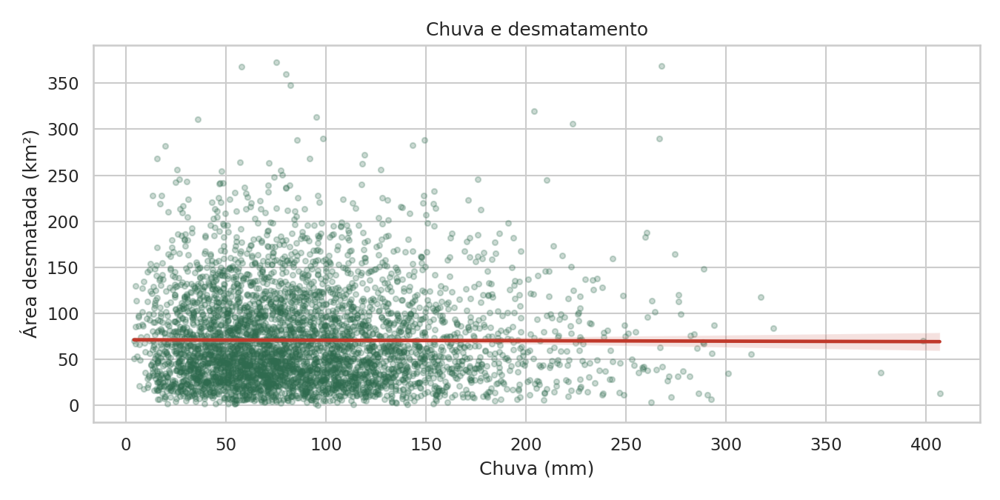

Desmatamento e Preservação Ambiental no Brasil
Uma análise de 10 anos de registros mensais em 20 estados: quanto se desmata, onde, e o que acompanha esse número.
Thalles Órion Volcov PitzLinguagem de Programação · Análise e Visualização de Dados com Python · Avaliação G1

O problema
O desmatamento reduz a vegetação nativa, aumenta as emissões de carbono, favorece as queimadas e ameaça a biodiversidade. Para agir, é preciso saber onde ele é maior e se acompanha outros fatores, como chuva, temperatura e focos de fogo.
Este projeto organiza os dados, calcula indicadores e apresenta tudo em um dashboard com filtros, para que qualquer pessoa explore os números por período, região, bioma e nível de risco.
Perguntas da análise
- O desmatamento aumentou ou diminuiu entre 2015 e 2024?
- Quais regiões, estados e biomas têm as maiores médias?
- Existe relação entre desmatamento, queimadas, clima e emissões?
- Como os registros se dividem entre os níveis de risco?
A base de dados
O arquivo simulacao_desmatamento_brasil.csv tem 4.440 linhas e 14 colunas, com um registro por estado, bioma e mês entre janeiro de 2015 e dezembro de 2024. Não há valores nulos nem linhas duplicadas.
- ano, mes, data
- período do registro
- regiao, uf, bioma
- onde o registro foi feito
- area_desmatada_km2
- área desmatada no mês
- area_preservada_km2
- área preservada
- focos_queimada
- quantidade de focos de queimada
- chuva_mm, temperatura_media
- condições do clima
- emissoes_co2
- emissões de CO₂
- unidades_conservacao
- número de unidades de conservação
- nivel_risco
- Baixo, Médio, Alto ou Crítico
Importante: a base é uma simulação criada para fins didáticos. Algumas combinações, como um estado do Norte aparecer com o bioma Caatinga, não existem na realidade. Os resultados mostram o processo de análise e não medições oficiais.
O que os gráficos mostram







Principais resultados
- Sem tendência clara. O total anual oscilou entre 30,3 mil e 34,0 mil km². O pico de 2017 está cerca de 10,8% acima do valor de 2024.
- Totais enganam, médias comparam. O Sudeste lidera em soma porque tem 1.560 registros, contra 600 do Norte. Na média, as regiões praticamente empatam.
- Atenção à Bahia e ao Amazonas. São os estados com as maiores médias por registro, 81,3 e 75,9 km².
- Nenhuma variável explica sozinha. Chuva, temperatura, queimadas e emissões têm correlação próxima de zero com o desmatamento nesta base.
- Próximo passo. Repetir a análise com dados oficiais, como o PRODES e o Queimadas do INPE, usando o mesmo dashboard.
Tecnologias
- Python
- Pandas
- Matplotlib
- Seaborn
- Streamlit
- Plotly
- SQLAlchemy
- SQLite
- GitHub
- Filtros múltiplos e KPIs dinâmicos
- Análise temporal e comparativos
- Dashboard organizado em abas
- Banco SQLite com duas tabelas relacionadas
- Mapa interativo com Plotly
- Correlação estatística
Estrutura do projeto
projeto-desmatamento-brasil/ ├── app.py ├── requirements.txt ├── README.md ├── index.html ├── dados/ │ └── simulacao_desmatamento_brasil.csv ├── database/ │ └── desmatamento.db ├── notebooks/ │ └── analise_desmatamento.ipynb └── imagens/